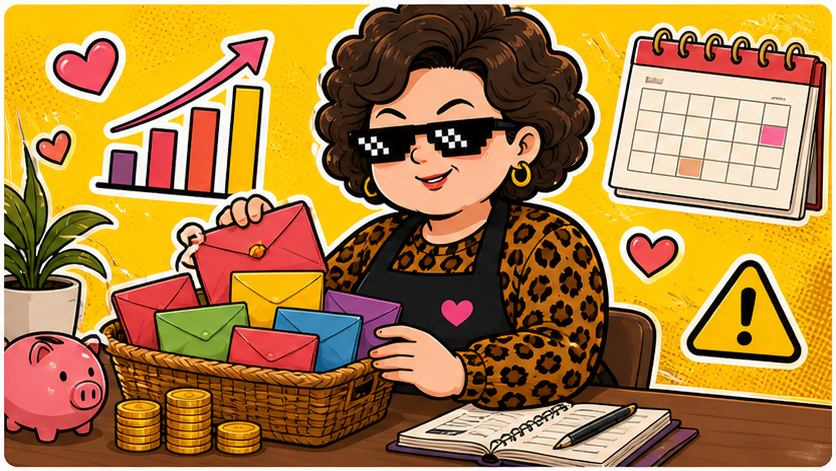

00919 · 2026/05/26
高股息像紅包袋，打開前先看錢從哪裡來。
5/26 收 27.93，漲 0.46，成交量 112,594,782 股。價格門檻親民，但 ETF 還是有成分股、淨值與波動風險。
收盤價27.93
漲跌▲ +0.46
成交量1.13 億股
阿姨一句話：配息不是魔法，是從 ETF 的資產裡整理出來的錢，拿之前要看清楚。
今天在演什麼
00919 是高股息 ETF，價格看起來比較容易入手，也符合很多人想要現金流的需求。今天小漲，代表市場仍有買盤關注這類配息商品。
但高股息 ETF 不能只看配息率。阿姨會看成分股集中度、換股規則、淨值變化和除息後是否填息。只看紅包厚不厚，忘了看錢包剩多少，就會被配息迷魂湯牽走。
阿姨看點
- 看成分：ETF 買的是一籃股票，不是一張保證書。
- 看淨值：配息後淨值怎麼變，比配息新聞更重要。
- 看用途：想要現金流可以研究，但不要把生活費全部押進去。
⚠️ 阿姨的風險提醒（你一定要看）
📌 本站所有股票 ETF 內容僅供教育與資訊參考，不是投資建議，不保證任何收益。
📌 所有數字與範例皆為靜態展示資料，未串接即時市場數據，請勿以此做為買賣依據。
📌 任何投資都有風險，包括本金損失的可能。投資前請自行做功課、評估財務狀況，必要時諮詢專業顧問。
📌 阿姨碎念歸碎念，賺錢賠錢都是你自己的事。阿姨不幫你決定，只幫你補習。
資料來源：臺灣證券交易所 00919 日成交資訊